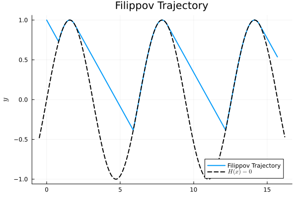

Filippov Example
import HybridDynamics as HD
import Plots as plt
using LaTeXStrings
F(x) = [3, -1]
G(x) = [0, 1]
H(x) = x[2] - sin(x[1])
N(x) = [-cos(x[1]), 1]
sysF = HD.FilippovSystem(F, G, H, N)
probF = HD.prob(sysF, [0.0, 1.0], (0.0, 10.0))
solF = HD.solve(probF, HD.RK4())HybridDynamics.FilippovSol{Vector{Float64}, Vector{Vector{Float64}}, Vector{Vector{Float64}}, Vector{Float64}, Vector{Float64}, Vector{Int64}}([0.0, 0.01, 0.02, 0.03, 0.04, 0.05, 0.060000000000000005, 0.07, 0.08, 0.09 … 9.91414482418869, 9.924144824188689, 9.934144824188689, 9.944144824188689, 9.954144824188688, 9.964144824188688, 9.974144824188688, 9.984144824188688, 9.994144824188687, 10.0], [[0.0, 1.0], [0.030000000000000002, 0.99], [0.060000000000000005, 0.98], [0.09000000000000001, 0.97], [0.12000000000000001, 0.96], [0.15000000000000002, 0.95], [0.18000000000000002, 0.94], [0.21000000000000002, 0.9299999999999999], [0.24000000000000002, 0.9199999999999999], [0.27, 0.9099999999999999] … [15.437003674526196, 0.62280910027604], [15.467003674526195, 0.61280910027604], [15.497003674526194, 0.60280910027604], [15.527003674526194, 0.59280910027604], [15.557003674526193, 0.5828091002760399], [15.587003674526192, 0.5728091002760399], [15.617003674526192, 0.5628091002760399], [15.647003674526191, 0.5528091002760399], [15.67700367452619, 0.5428091002760399], [15.694569201960128, 0.5369539244647273]], [[3.0, -1.0], [3.0, -1.0], [3.0, -1.0], [3.0, -1.0], [3.0, -1.0], [3.0, -1.0], [3.0, -1.0], [3.0, -1.0], [3.0, -1.0], [3.0, -1.0] … [3.0, -1.0], [3.0, -1.0], [3.0, -1.0], [3.0, -1.0], [3.0, -1.0], [3.0, -1.0], [3.0, -1.0], [3.0, -1.0], [3.0, -1.0], [3.0, -1.0]], [0.28186550350942957, 0.2918655035094296, 0.3018655035094296, 0.3118655035094296, 0.3218655035094296, 0.3318655035094296, 0.3418655035094296, 0.35186550350942963, 0.36186550350942964, 0.37186550350942965 … 9.501673956663113, 9.511673956663113, 9.521673956663113, 9.531673956663113, 9.541673956663113, 9.551673956663112, 9.561673956663112, 9.571673956663112, 9.581673956663112, 9.591673956663112], [0.27186550350942956, 1.216564441868047, 2.5428837549121566, 5.405354622437899, 6.731673956663172, 9.594144824188696], [29, 124, 257, 544, 677, 964])xf = getindex.(solF.x, 1)
yf = getindex.(solF.x, 2)
xh = range(minimum(xf)-0.5, maximum(xf)+0.5, length=1_000)
plt.plot(xf, yf, lw=2, label="Filippov Trajectory")
plt.plot!(xh, sin.(xh), lw=2, lc=:black, ls=:dash, label=L"H(x)=0")
plt.plot!(title = "Filippov Trajectory", label=L"x", ylabel=L"y")